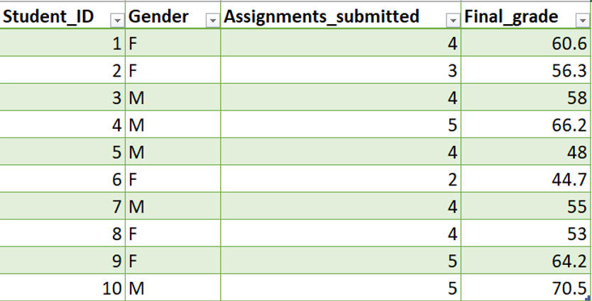
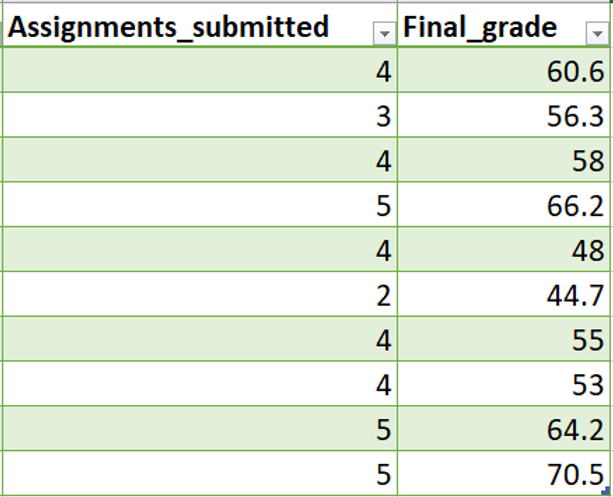
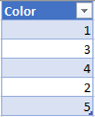
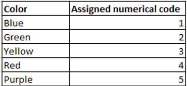

In statistics, we deal with all sorts of variables. They help us understand relationships and derive insights, so it’s important to have a good understanding of them.
Variables are any characteristics, numbers or quantities that can be measured or counted. Examples of variables include gender, weight, income, grade, etc. Each variable consists of values that we call data. For example, the data values for gender could be Male and Female, or in other cases, just F and M. Consider the table below.

The first row presents the four variables: Student_ID, Gender, Assignments_submitted and Final_grade. The definitions of these variables should be pretty self-explanatory. The remaining cell values are the data. They represent the values measured or observed for the variable of their corresponding column.
Numerical and Categorical Variable
There are two main types of data type:
- Categorical Data
- Numerical Data
Let's start by discussing the categorical datatype.
Categorical Data
Categorical Data are expressed in discrete groups or categories. Examples include:
- gender (Male or Female)
- car models (Tesla Model 3, BMW X5)
- letter grades (A, B, C, D, F)
Notice the data values are all in discrete groups or "categories". In the previous table, Gender is a categorical variable. By the data, a student’s gender falls into one of two categories: F (female) or M (male).
Numerical Data
Numerical Data are expressed in numbers. Examples include:
- rating (1-5)
- income (20,000–100,000)
- number of students (0–100)
In the previous table, Assignments_submitted and Final_grade are numeric variables because their data values are in numbers. There is, however, a slight difference between Assignments_submitted and Final_grade. Let’s take a closer look at the two variables.

Have you noticed the difference? We can see that Final_grade has decimal points, whereas Assignments_submitted are pure integers.
Terminology Alert!
Final_grade and Assignments_submitted each represent the two types of numeric variables:
- Continuous Numeric Variable
- Discrete Numeric Variable
By definition, Continuous Numeric Variables are measured items. In other words, continuous numeric variables can occupy any value over a continuous range. In our table of data, Final_grade is a continuous numeric variable because it can basically take any value ranging from 0–100, including decimal and fraction values.
Discrete Numeric Variables, on the other hand, are counted items. That means discrete numeric variables can only take integer values. Assignments_submitted is a discrete numeric variable because its values can only be integers. It wouldn’t make sense for a student to submit eg. 2.5 assignments.
So a good way to differentiate between a discrete and continuous variable is to consider whether the variable would make sense to take on a decimal or a fraction value. The number of cars someone owns, for example, would be discrete, because it doesn’t make sense to own 1.7 cars.Time Data
Some variables like time and age are trickier to identify. While time is technically continuous because you can be infinitely precise to the milliseconds, it still depends on how it was recorded. In cases where time is recorded in intervals of years, weeks, days or even hours, time is rather discrete. When you record time to the exact moment in seconds, then it is rather continuous. It can be hard to tell sometimes.
Categorical Encoding
When you perform statistical analysis with a computer, you need to translate your data such that your computer can understand it. One thing computers struggle to understand is character values. Thus, it is common practice to encode categorical values (known as Categorical Encoding) into numeric values so computers can understand the data. Let’s look at a simple example.

In the table above, we can see the data values for Color are numbers 1–5. Instinctively, we might think that Color is a numerical variable because its data values are numbers. This claim, however, is not true because each number actually represents a separate color.

\Given the table above, we can see that the number 1 actually represents blue, number 2 represents green and so on. Color is actually a categorical variable, despite its values being represented in numbers. The takeaway here is that it’s important to understand the meaning of the variables and what their values represent. Again, the colors are represented in numbers because they had been encoded into numbers so that computers can understand. There are many different methods of encoding, but that would be for another story.
Conclusion
Congratulations on completing another post! In this post, we discussed the two types of variables, categorical and numerical. And under numerical variables, we again branched into discrete numeric variables and continuous numeric variables. We also discussed how encoding enables computers to understand character data values. Next, we’ll move on to introducing basic data visualization.
Next: Basic Data Visualization in Statistics